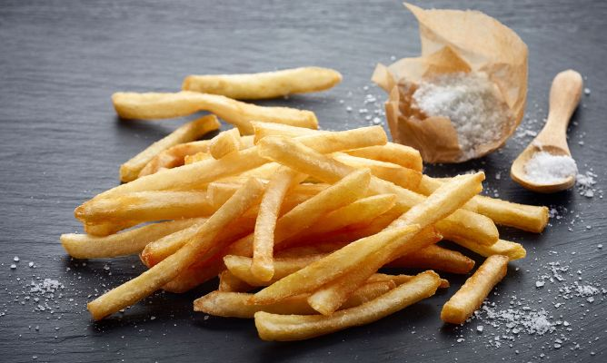

Receta Papas Fritas Caseras
Ingredientes
- 4 papas amarillas grandes
- 2 tazas de aceite vegetal
- sal al gusto
- aderezos y salsas
Intrucciones
- Pela las papas y córtalas en tiras finas (Trata que todas salgan parejas, más o menos del mismo tamaño)
- Pon todas las papas cortadas en un recipiente y cubre con agua para que eliminen el almidón
- Repite un par de veces hasta que el agua salga limpia
- Escurre las papas y seca bien con servilletas de papel.
- Calienta el aceite en una sartén grande sobre fuego medio-alto.
- Cuando esté caliente, agrega una parte de las papas, moviendo de vez en cuando, hasta que las papitas estén doradas.
- Retíralas del aceite con una coladera y ponlas en un plato cubierto con servilletas de papel.
- Sazona las papitas con sal y repite hasta que todas las papas estén fritas.
- En un recipiente, agrega los aderezos de tu preferencia
- Sirve las papitas fritas con aderezos y salsas.
